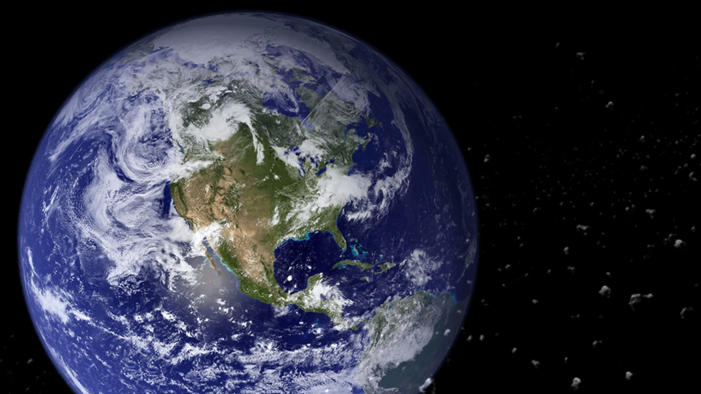

Inicio
Imagenes
Videos
Noticias
Contactos
Cómo ver un eclipse solar de forma segura
Tu navegador no soporta videos HTML5. Puedes descargar el video
aquí
.
¿Qué pasa dentro de un agujero negro?
Tu navegador no soporta videos HTML5. Puedes descargar el video
aquí
.
La misión de Perseverance en Marte
Tu navegador no soporta videos HTML5. Puedes descargar el video
aquí
.
¿Qué pasaría si la Vía Láctea y Andrómeda colisionaran?
Tu navegador no soporta videos HTML5. Puedes descargar el video
aquí
.